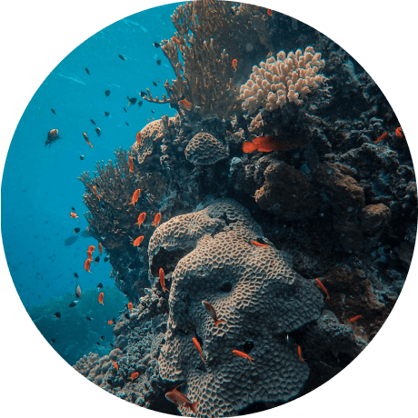
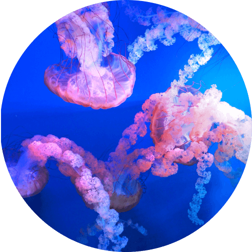
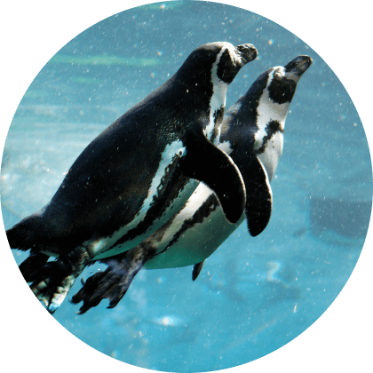

世界水域區(兩天一夜)
1-12月
觀賞海底奇景，體驗海洋生態
世界水域區更設有專業的生物解說，讓你更了解這些神奇的海洋生物的特性及生態，開啟對自然的新視野。
除了觀賞海洋生物，你還可以參加各種水上活動，如划艇、帆船等等，全面感受大海的魅力。此外，豐富多彩的活動，如夜間星空觀賞、海邊營火派對等，讓你的假期充滿無限的樂趣。

台灣水域區(兩天一夜)
3-6月
觀賞海底奇景，體驗海洋生態
第一天：前往海洋博物館了解海洋文化和保育知識，隨後乘船前往藍洞探索秘境，觀察熱帶魚和珊瑚礁。晚上入住海生館，進行夜間探索、聆聽海洋生物的聲音，更有機會觀察到燈籠魚、海蜇等特殊生物。
第二天：前往海洋保護區進行浮潛活動，近距離觀察海洋生態，並且參與海洋保育行動。這個兩天一夜的行程充滿探索和學習的樂趣，讓您深入了解台灣水域區的獨特之處。

觀賞珊瑚(兩天一夜)
7-9月
觀賞海底奇景，體驗海洋生態
第一天：您將前往海生館夜宿，體驗夜間探索，聆聽海洋生物的聲音，甚至有機會看到燈籠魚等特殊生物。接著，您將前往珊瑚區進行浮潛活動，近距離觀察五彩繽紛的珊瑚和不同種類的熱帶魚。
第二天：您將前往海底隧道，這是一條位於海底的隧道，讓您感受獨特的海底生態和神秘的氛圍。這個兩天一夜的行程讓您完全沉浸在海洋世界中，體驗不一樣的探索和冒險。

蟹逅(兩天一夜)
10-12月
觀賞海底奇景，體驗海洋生態
在這兩天一夜的旅程中，你可以享用豐盛的海鮮美食，品嚐鮮味十足的螃蟹料理，並且探索海洋生物的神秘世界。
除了品嚐美食，你還可以參加專業的生物解說，了解螃蟹的生長習性，更進一步瞭解海洋生物的多樣性。而豐富多彩的活動，如海濱散步、沙灘沐浴、水上活動等，讓你全身心地感受大自然的美好。